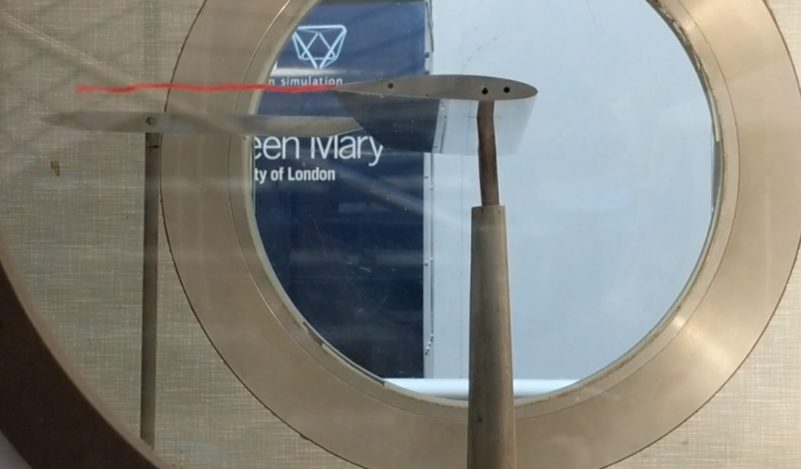

Pressure Distribution Around a Symmetrical Aerofoil
March 2023
Investigation into the static pressure profile along a symmetrical aerofoil
Wind tunnel set up for the experiment. 30 pressure tappings were fitted along the mid-span of the aerofoil with 2 at each position, one on the upper surface and one on the lower surface.
Final results for the difference in pressure coefficient plotted on a graph.
Both the pressure coefficients and change in pressure coefficients are greatest towards the trailing edge for all inclinations. This results in the majority of the lift force acting near to the leading edge due to the difference in pressure between the upper and lower surfaces being the greatest in this region.